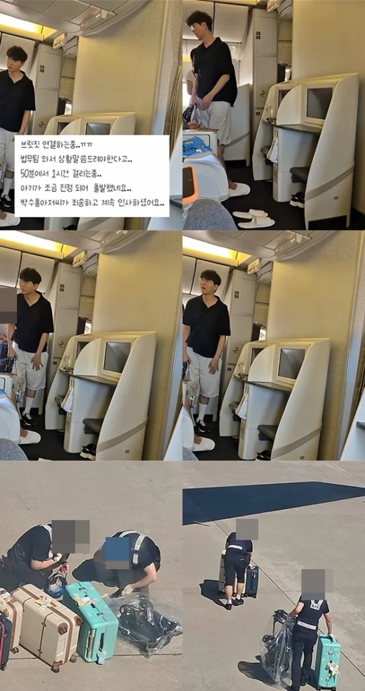

박수홍, '비행기 지연' 당시 영상 공개…승객들에 연거푸 "죄송합니다" [스타이슈] : 네이트 연예

방송인 박수홍 가족이 비행기 하차와 재탑승을 하며 '민폐 논란'에 휩싸인 가운데, 당시 상황이 담긴 영상이 공개됐다.
작성자는 "프레스티지석에 이용식 가족분들과 박수홍 가족분들이 타셨더라"라며 "딜레이 없이 출발 직전 박수홍 아저씨 아기가 정말 심하게 울더라. 박수홍 아저씨가 아기가 너무 울어서 내려야겠다고 하셨다"라고 전했다.
작성자는 박수홍이 주변 승객들에게 몇 번이나 "죄송합니다"라고 사과하는 영상을 공개했다.
영상에는 박수홍의 딸이 큰 소리로 울고 있었다.
그는 "법무팀 와서 상황 말씀 드려야 한다고.. 50분에서 1시간 걸리는 중.. 아기가 조금 진정 되어 출발했다. 박수홍 아저씨가 죄송하다고 계속 인사하셨다"라고 말했다.
이와 관련 박수홍은 26일 자신의 인스타그램에 "최근 비행기 출발 과정에서 저희 가족으로 인해 지연 출발 문제가 발생했다. 이로 인해 많은 분들의 소중한 시간을 빼앗는 큰 불편함을 드렸고, 항공사 관계자 분들께도 피해를 드렸다. 이에 고개 숙여 진심으로 사과의 말씀을 올린다"라며 글을 게재했다.
형아 까방권 몇개 있어 괜찮아
태도가 좋으니 논란이 안되는 참 연예인